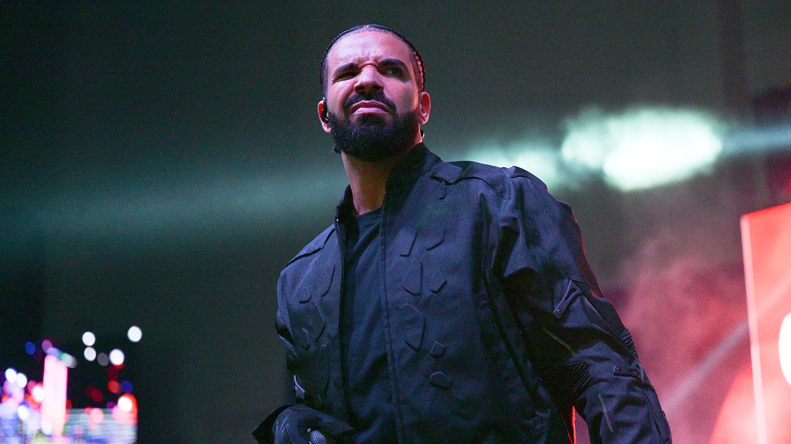
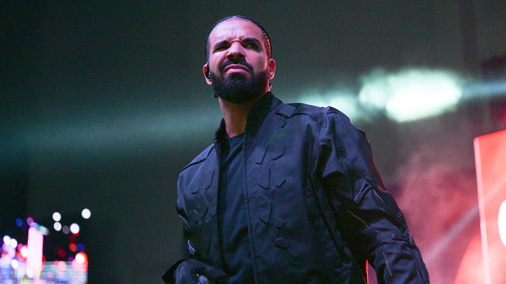

Post Malone
Austin Richard Post, mais conhecido pelo nome artístico de Post Malone, possui cerca de 90 milhões de ouvintes mensais, no Spotify. Post Malone também é o artista com mais discos diamante na história, com 9 prêmios diamante em algumas de suas maiores músicas.
Travis Scott
Jacques Berman Webster II, conhecido por seu nome artístico Travis Scott, possui cerca de 70 milhões de ouvintes mensais, no Spotify. Travis em 2013 já estava na cena do rap e Hip Hop, lançando sua primeira mixtape Owl Pharaoh, e tem seu lançamento icônico do álbum Astroworld, em 2018.
Don Toliver
O nome Don Toliver é a assinatura artística de Caleb Zackery Toliver, possui cerca de 30 milhões de ouvintes mensais, no Spotify. Don Toliver ficou muito conhecido após o lançamento do single "No idea", em 2019, que o ajudou a assinar seu contrato com a gravadora de Travis Scott, a Cactus Jack Records.
Kendrick Lamar
Kendrick Lamar Duckworth, ou apenas Kendrick Lamar, possui 75 milhões de ouvintes mensais no Spotify, é um dos artistas que está a mais tempo na cena do Hip Hop, em 2012, Kendrick já lançava seu segundo álbum "Good Kid, M.A.A.D City", que foi um sucesso, após alguns anos teriam mais 5 álbuns de muito sucesso em sua carreira.
Asap Rocky
Rakim Athelaston Nakache Mayers, conhecido pelo nome ASAP Rocky, que possui quase 40 milhões de ouvintes mensais no Spotify, é um rapper, compositor, produtor, diretor musical, ator e modelo, é muito reconhecido por seu talento em diferentes setores criativos e conhecimento de moda, e por sua estética envolvendo música.
Tyler, The Creator
Tyler Gregory Okonma, conhecido pelo nome artístico Tyler, The Creator, possui 35 milhões de ouvintes mensais no Spotify, é um rapper e produtor musical norte-americano. Tyler, já possui prêmios diversos, como um Grammy de Melhor Álbum de Rap, além de ser um expoente também na área da moda.
Drake
Aubrey Drake Graham, ou como conhecido, Drake, é rapper, compositor, ator, produtor musical e empresário canadense. Drake é um dos maiores cantores da cena, tendo muito reconhecimento por diversos álbuns de sucesso, e singles mundialmente conhecidos como "Toosie slide" e "God's plan".